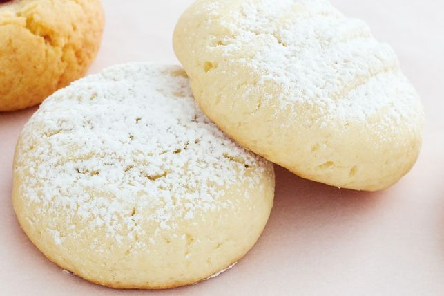

Butter Biscuits

Description
Our favourite recipe for butter biscuits has become the “go-to” biscuit recipe for our readers,
many of whom have added their own twist - including powdered ginger, choc chips and peanut butter.
It’s also a great recipe for budding bakers who can be in charge of rolling the dough into little balls
and then pressing with the tines of a fork (I loved doing that as a kid!). Because they make 30 biscuits
there'll be plenty on hand for afterschool snacks or just timeout with a cup of tea.
Ingredients
Biscuits
- 125g butter, softened
- 1/2 cup caster sugar
- 1/2 tsp vanilla extract
- 1 egg, at room temperature
- 2 cups plain flour
- 1 tsp baking powder
- 1 tbsp milk
- 2 tbsp pure icing sugar, to serve
Steps
- Preheat oven to 180°C. Line 2 baking trays with baking paper.
- Using an electric mixer, beat butter, sugar and vanilla in a small bowl until pale and creamy. Add egg and mix until well combined. Sift flour and baking powder over butter mixture. Add milk and stir until just combined.
- Using 2 teaspoons of dough at a time, roll dough into balls. Place on baking trays lined with baking paper. Using a lightly-floured fork, flatten biscuits slightly (allow room for spreading).
- Bake for 12 to 15 minutes, swapping trays over in oven after 10 minutes, or until light golden. Allow to cool on trays for 5 minutes. Transfer to wire racks to cool completely. Dust with icing sugar. Serve.
Home